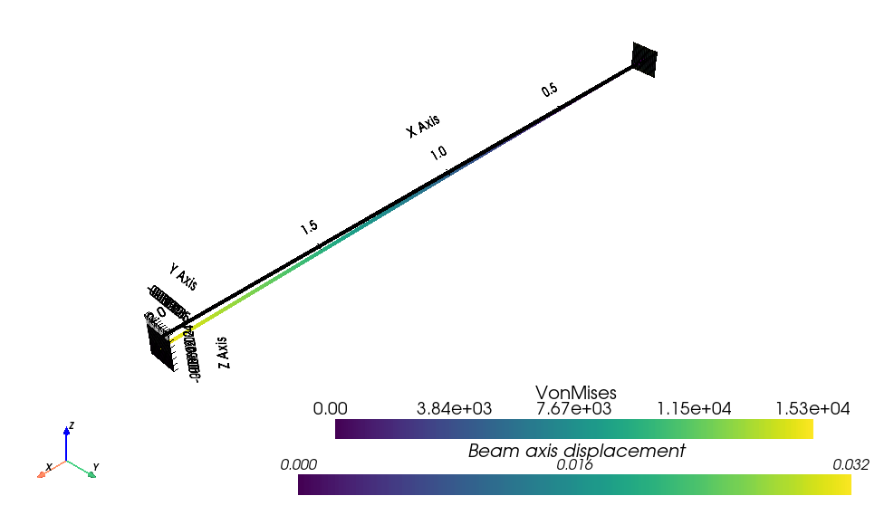
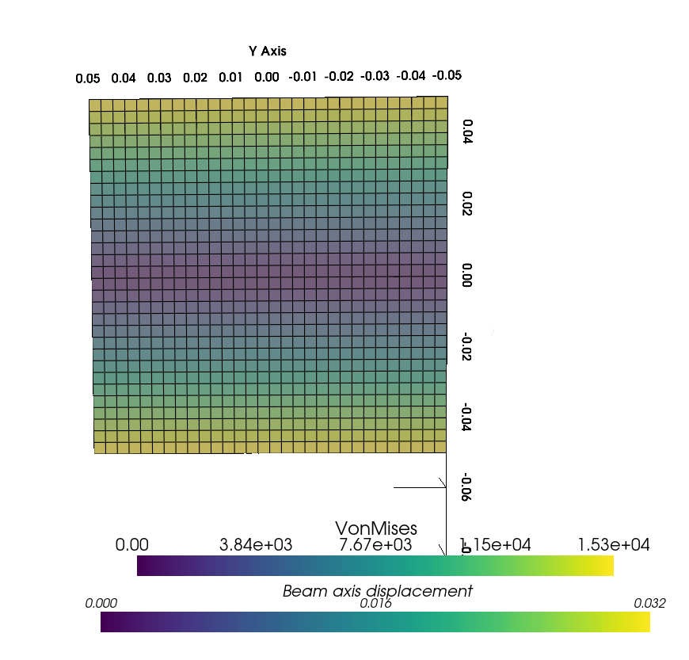

Welcome to ALBATROSS
Analysis Library for Beams And Three-dimensional Representations Of Slender Structures
This package is a collection of various beam utilities using FEniCSx.
Currently supported tasks:
Cross-sectional analysis of generic 2D cross-sections
Static analysis beams with variable and arbitrary cross-sections
Displacement and stress recovery at any defined cross-section
When cross-sectional analysis is paired with an appropriate 1D model, stress and displacement results computational work can be reduced my multiple orders of magnitude.
Below is are post processed results for a cantilever beam with an applied tip load.

The von_mises stress can be plotted over the cross-section for this same example:
